Short animations of things you see every day, and the physics behind them.
Q1
Why does a raw egg stop spinning, but a boiled egg keeps going?
Inertia · Rotation · HC Verma Ch 5 & 10
What you see
Two eggs are spun at the same speed. The hard-boiled egg keeps spinning smoothly in place. The raw egg wobbles, slows down quickly and stops within about two turns.
Why it happens
A boiled egg is solid, so the shell and everything inside turn together as one rigid body. The spin you give it is kept, and only a little friction with the table slows it down.
A raw egg is a shell full of liquid. When you twist the shell, the liquid inside does not want to start turning: that is inertia. It lags behind and sloshes around, and the friction between the liquid and the shell drags the spin away. The energy you gave the egg is wasted inside it.
Big idea: The liquid inside a raw egg doesn't want to turn, so it drags the spin away.
Try it yourself
Spin a boiled egg and a raw egg side by side on a smooth table.
Now stop the spinning raw egg with one finger for just a moment, then let go.
Watch it start turning again by itself. The liquid inside was still swirling!
Why do you jerk forward when a bus brakes suddenly?
Inertia · Newton's First Law · HC Verma Ch 5
What you see
The bus and the standing passenger move together at 40 km/h. When the brakes come on, the bus slows down, but the passenger tips forward. When the bus starts again, the passenger tips backward.
Why it happens
Newton's first law says a body keeps moving at the same speed in a straight line unless a force changes its motion. This tendency to keep doing what it was doing is called inertia.
When the bus brakes, the brakes slow the bus, and friction from the floor slows your feet along with it. But nothing slows your upper body at that moment, so it carries on forward and you tip toward the front. When the bus starts suddenly, the opposite happens: your body tends to stay at rest, so you fall backward.
Big idea: Your body keeps doing what it was doing. It needs a force to change its motion.
Try it yourself
Next time you ride a bus or metro, hold the handle and notice which way your body leans when it starts and when it stops.
Put a toy car with a small toy on top on a book, then stop the book suddenly. The toy flies forward.
Explain why seat belts are important using the same idea.
Flick a card from under a coin. Why does the coin drop into the glass?
Inertia of Rest · Newton's First Law · HC Verma Ch 5
What you see
A coin rests on a card placed over a glass. A finger flicks the card away fast. In slow motion you can see the card shoot away while the coin barely moves sideways, then the coin drops straight down into the glass.
Why it happens
An object at rest stays at rest unless a force acts on it. This is inertia of rest.
The only sideways force on the coin is friction from the card. With a fast flick, the card slides out in a tiny fraction of a second, so friction acts for far too short a time to get the coin moving. Once the card is gone, nothing holds the coin up, and gravity pulls it straight down into the glass.
Pull the card slowly instead, and friction has enough time to drag the coin along with the card.
Big idea: A fast flick gives friction no time to move the coin, so it stays behind.
Try it yourself
Place a smooth playing card on a glass and a coin on top of the card.
Flick the edge of the card sharply with your finger, straight and fast.
Now try pulling the card slowly and compare what happens to the coin.
Why is a heavy box harder to start pushing than to keep moving?
Static vs Kinetic Friction · HC Verma Ch 6
What you see
A person pushes a heavy box with more and more force. The box doesn't move, because friction grows to match the push. At 60 N the box suddenly slips free, and after that only 40 N is needed to keep it sliding. The graph shows friction rising, then dropping as soon as the box starts to slide.
Why it happens
While the box is at rest, the floor's static friction adjusts itself to balance your push exactly, but only up to a maximum (limiting friction, μₛ N). Push beyond that and the box starts to slide.
Once it slides, kinetic friction takes over (μₖ N), and it is smaller, because μₖ is usually less than μₛ.
Why? Even smooth-looking surfaces touch only at a few tiny points, and molecular bonds form at those points. At rest, the bonds have time to form properly, so a bigger force is needed to break them. While sliding, each contact lasts only a moment, so less force is needed to keep the box moving.
Big idea: Starting friction (static) is bigger than sliding friction (kinetic).
Try it yourself
Put a heavy book on a table and pull it with a rubber band tied to it.
Watch how far the band stretches just before the book starts to move.
Keep pulling at a steady speed: the band stretches less, because sliding friction is smaller.
Circular Motion · Turning on a Road · HC Verma Ch 7
What you see
The cyclist rides upright on the straight parts of the track. On each curve they lean in towards the centre. From behind you can see the forces: weight (mg) down, the road's normal force (N) up, and friction at the tyre pointing towards the centre of the turn.
Why it happens
Anything moving in a circle needs a force towards the centre (a centripetal force). On a flat road, the only sideways force a bicycle can get is static friction from the road, acting at the tyre.
If the rider stayed upright, that sideways friction at the bottom of the bike would try to tip the bike over, outwards. By leaning in, the rider lines things up so that the friction and the normal force together point straight through their body (the centre of mass). Then there is nothing left to tip them over.
The right lean angle depends on the speed and the radius of the turn: tan θ = v²/(rg). Faster or tighter turns need a bigger lean. It is the same idea as a banked road.
Big idea: Leaning in lets friction turn you without tipping you over.
Try it yourself
Next time you cycle round a bend, notice how much you lean at a slow speed and at a faster speed.
Watch a motorbike race: on fast, tight curves the riders lean so far their knees nearly touch the road.
Work it out: at 5 m/s on a turn of radius 10 m (g = 10 m/s²), tan θ = 25/100, so θ is about 14°.
Why does a fielder pull their hands back while catching?
Impulse · Momentum · HC Verma Ch 9
What you see
The same 160 g cricket ball arrives at 20 m/s and is caught two ways. With stiff hands it stops in about 10 ms and the force peaks at about 500 N. With the hands pulled back, the stop takes about 50 ms and the force peaks at only about 100 N. Under each catch, a graph shows force against time: a tall, thin spike versus a low, wide hump.
Why it happens
To stop the ball, its momentum must change from mv = 0.16 × 20 = 3.2 kg·m/s to zero, however you catch it.
That change in momentum equals the impulse: force × time, which is the area under the force-time graph. Both catches have the same area, 3.2 N·s.
If the area is fixed, a longer time must mean a smaller force. Pulling the hands back makes the stop last about five times longer, so the force on the hands is about five times smaller.
Big idea: More time to stop means less force.
Try it yourself
Catch a tennis ball twice: once with stiff arms, once letting your hands move back with it. Which feels softer?
Drop an egg onto a hard floor and onto a pillow (outdoors, carefully!). The pillow makes the stop take longer.
Think about it: why do cars have airbags, and why do you bend your knees when you jump down?
Conservation of Momentum · Rocket Propulsion · HC Verma Ch 9
What you see
A blown-up balloon is taped to a straw threaded on a string. When it is let go, air rushes out of the back and the balloon shoots forwards along the string, shrinking as it empties. The momentum panel shows the air's momentum (backwards) and the balloon's momentum (forwards) growing together, always equal and opposite.
Why it happens
Before the balloon is let go, nothing moves, so the total momentum of the balloon and the air inside it is zero.
No outside force acts on the system along the string, so its total momentum must stay zero. As the stretched rubber squeezes air out backwards, the air gains backward momentum, and the balloon must gain exactly the same amount of forward momentum.
The same story with Newton's third law: the balloon pushes the air backwards, and the air pushes the balloon forwards. A rocket works the same way. It doesn't need air to push against, which is why rockets work in space.
Big idea: Push air backwards, and you move forwards.
Try it yourself
Thread a long string through a drinking straw and tie it tightly between two chairs.
Blow up a balloon, pinch the neck, and tape it to the straw.
Let go and measure how far it goes. Try a bigger balloon, or a string sloping upwards.
Why does an ice skater spin faster after pulling her arms in?
Conservation of Angular Momentum · HC Verma Ch 10
What you see
The skater spins slowly with her arms stretched out, about half a turn per second. When she pulls her arms in, she spins more than twice as fast. When she stretches them out again, she slows down. The meters show her moment of inertia (I) going down, her spin speed (ω) going up, and her angular momentum (L = Iω) staying exactly the same.
Why it happens
A spinning body has angular momentum L = Iω, where I is the moment of inertia and ω is the angular speed.
The moment of inertia depends on how far the mass is from the axis of rotation. Arms stretched out put mass far from the axis, so I is large. Arms pulled in bring that mass close, so I gets smaller.
The smooth ice gives almost no torque (twisting force), so angular momentum is conserved. If I goes down, ω must go up to keep Iω the same.
Big idea: Pull mass in towards the axis, and you spin faster.
Try it yourself
Sit on a spinning office chair with your arms and legs stretched out, and get a friend to give you a gentle spin.
Pull your arms and legs in close. You speed up!
Hold a heavy book in each hand to make the effect even stronger. (Keep it gentle and safe.)
Free Fall · Acceleration Due to Gravity · HC Verma Ch 3
What you see
A hammer and a feather are dropped from 1.5 m at the same moment. With air (left), the hammer lands in about 0.55 s while the feather floats and drifts slowly down. With no air (right, like on the Moon), the feather and hammer fall side by side and land together. The faded copies are taken at equal time steps: they get further apart because both are speeding up.
Why it happens
Gravity pulls on the hammer with a bigger force (its weight, mg), but the hammer also has more mass, so it is harder to speed up. Acceleration = force ÷ mass = mg ÷ m = g. The mass cancels, so every object falls with the same acceleration g ≈ 9.8 m/s².
In air, there is also air resistance pushing up. For a heavy, compact hammer it hardly matters, but for a light, spread-out feather it is almost as big as the feather's weight, so the feather quickly reaches a slow, steady speed.
In 1971, Apollo 15 astronaut David Scott dropped a hammer and a falcon feather on the Moon, where there is no air. They landed at the same time.
Big idea: Without air, everything falls with the same acceleration. It's the air, not the weight, that slows the feather.
Try it yourself
Drop a book and a flat sheet of paper side by side. The book wins.
Now put the paper flat on top of the book and drop them together. The book shields the paper from the air, so they fall together.
Crumple the paper into a tight ball and drop it beside the book. Less air resistance: they land almost together.
Why do you feel lighter when a lift starts going down?
Apparent Weight · Newton's Second Law · HC Verma Ch 5
What you see
A 60 kg person stands on a bathroom scale in a lift that goes down. At rest the scale reads 60 kg. While the lift speeds up going down (2 m/s²), it reads only 48 kg. At a steady speed it is back to 60 kg. While the lift slows down to stop, it reads 72 kg. The graph traces the reading through the whole trip.
Why it happens
A scale doesn't measure gravity directly. It measures the normal force: how hard the floor (through the scale) pushes up on you.
Newton's second law for you: mg − N = ma (taking downward as positive). When the lift speeds up going down, a is downward, so N = m(g − a) is less than your weight: 60 × (10 − 2)/10 = 48 kg. When it slows down, the acceleration is upward, so N = m(g + a) = 72 kg. At a steady speed, a = 0 and N equals your weight.
Your true weight (mg) never changes. What changes is your apparent weight. In free fall (a = g), the scale would read zero, which is the weightlessness astronauts feel in orbit.
Big idea: A scale shows how hard the floor pushes on you, not your true weight.
Try it yourself
Take a bathroom scale into a lift (ask first!) and watch the reading as the lift starts, moves and stops.
Notice: going up, you feel heavier as it starts and lighter as it stops.
Hang a bag from a spring balance or luggage scale and jump gently in place. Watch the reading change.
Why does pushing a swing at the right moment send it higher?
Resonance · Simple Harmonic Motion · HC Verma Ch 12
What you see
Two identical swings get the same-sized push. The left one is pushed each time it swings back and turns forward: after five pushes it swings about 30°. The right one is pushed at random moments, even more often, but it never gets much past 10°. The graphs underneath show the angle over time, with a line marking each push.
Why it happens
A swing is a pendulum. Left alone, it swings back and forth with its own natural frequency, which depends on the length of the ropes (T = 2π√(l/g) for a simple pendulum).
A push adds energy only if it acts in the direction the swing is already moving. Pushing in step with the natural rhythm, every push adds energy, so the swings build up. Random pushes sometimes act against the motion and take energy away.
This build-up when a force is applied at the natural frequency is called resonance.
Big idea: Push in step with the natural rhythm, and every push adds up.
Try it yourself
Hang a small weight on a string about 25 cm long and give it tiny taps, one per swing, always as it moves away from you.
Now tap at random. Compare how big the swings get.
Shorten the string to 10 cm. Is the natural rhythm faster or slower?
Q12
How does a huge iron ship float when an iron nail sinks?
Buoyancy · Archimedes' Principle · HC Verma Ch 13
What you see
An iron nail and an iron ship go into tanks of water. The nail sinks straight to the bottom: its weight is much bigger than the small upthrust on it. The ship settles a little way into the water, bobs, and floats. The shaded part of the hull shows the water it has pushed aside, and the upthrust arrow grows until it matches the ship's weight.
Why it happens
Anything in a fluid feels an upward force, called upthrust or buoyant force. Archimedes' principle: the upthrust equals the weight of the fluid pushed aside (displaced).
A solid nail displaces only its own small volume of water. Iron is about 7.9 times denser than water, so that water weighs far less than the nail, and it sinks.
A ship's hull is hollow and wide, full of air. It sinks only until it has pushed aside water that weighs as much as the whole ship. Then upthrust equals weight, and it floats. Its average density (iron plus all that air) is less than that of water.
Big idea: It's the shape, not the material: a hollow hull pushes aside enough water to hold up its weight.
Try it yourself
Drop a ball of aluminium foil into a bowl of water. It sinks.
Now fold the same foil into a little boat. It floats!
Add coins to the boat one by one and watch it sink deeper as it pushes aside more water.
Q13
How can a needle (or an insect) rest on water?
Surface Tension · HC Verma Ch 14
What you see
A steel needle (seen end-on) is lowered gently onto water. It doesn't sink: it rests in a small dip in the surface, like a weight on a stretched rubber sheet. Green arrows show the surface pulling up and outward on both sides, balancing the needle's weight. When a drop of soap is added, the pulls get weaker, the dip deepens, and the needle breaks through and sinks.
Why it happens
Molecules of water attract each other. A molecule inside the water is pulled equally in all directions, but one at the surface is pulled sideways and inward only. As a result, the surface behaves like a stretched elastic skin. This is surface tension.
Where the surface bends around the needle, it pulls along itself, up and outward on both sides. The upward parts of these pulls add up to balance the needle's small weight, even though steel is about 8 times denser than water.
Soap lowers the surface tension of water. The weaker skin can no longer hold the needle, so it sinks.
Big idea: The surface of water acts like a stretched skin.
Try it yourself
Lay a small piece of tissue paper on water and gently place a dry needle (or a paper clip) on it.
Wait for the tissue to soak and sink. The needle stays on the surface!
Touch the water at the edge with a soapy finger and watch what happens.
Q14
Why does a paper strip rise when you blow over it?
Bernoulli's Principle · Fluid Flow · HC Verma Ch 13
What you see
A paper strip is held just below the lips, drooping down. When air is blown over the top, the strip lifts up almost level and flutters. The air stream follows the curved top of the paper. The arrows and the panel show the pressure on the strip: normal air pressure below, lower pressure above. When the blowing stops, the strip drops back down.
Why it happens
Below the strip the air is still, so it pushes up with normal atmospheric pressure.
Above the strip, the blown air moves fast and curves along the paper. Bernoulli's principle says that along a flow, where the speed is higher, the pressure is lower. (Strictly, the pressure drops because the stream is bending along the curved paper; Bernoulli's equation links that lower pressure with the faster flow.)
With lower pressure above and normal pressure below, there is a net upward push, so the paper rises.
Big idea: Fast-moving air over the top has lower pressure, so the still air below pushes the paper up.
Try it yourself
Cut a strip of paper about 3 cm wide and 20 cm long.
Hold one end just under your lower lip so it droops, and blow hard and steadily over the top.
Now hang two sheets of paper a few cm apart and blow between them. Do they move apart or together?
Q15
Why does a straw look bent in a glass of water?
Refraction of Light · HC Verma Ch 18
What you see
A straight straw stands in a glass of water. Rays of light leave three points on the straw under water, bend as they come out of the surface, and reach the eye. Dashed lines trace each ray straight back from the eye: they meet higher up than the real points. So the eye sees the underwater part of the straw raised and tilted, and the straw looks bent at the surface.
Why it happens
Light travels more slowly in water than in air. When it crosses the surface at an angle, it changes direction: this is refraction. Going from water (refractive index about 1.33) into air, light bends away from the normal (the line perpendicular to the surface).
Our eyes and brain assume light travels in straight lines, so we see each point of the straw where the bent ray seems to come from: higher than it really is. Seen from straight above, things under water look about 3/4 as deep (real depth ÷ 1.33). Seen at a slant, they are lifted even more.
Deeper points are lifted more, so the whole underwater part of the straw appears tilted up and the straw looks bent at the surface.
Big idea: Light bends at the surface, so things under water look higher than they really are.
Try it yourself
Put a coin at the bottom of an empty cup and move your head back until the coin just disappears behind the rim.
Keep your head still while a friend slowly pours water in. The coin comes back into view!
Look at a pencil in a glass of water from different angles. When does it look most bent?
Q16
Why is the sky blue, but the sunset red?
Scattering of Light · Rayleigh Scattering
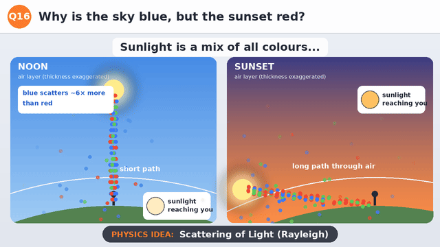
What you see
Sunlight is shown as a stream of red, green and blue light. As it passes through the layer of air, blue packets keep getting scattered off in all directions, while red ones mostly go straight. At noon (left) the light crosses only a little air, so the sunlight reaching you is nearly white, and scattered blue fills the sky. At sunset (right) it skims through a much longer path, most of the blue is scattered away, and the light reaching you is orange.
Why it happens
Sunlight contains all colours. When light meets particles much smaller than its wavelength, like air molecules, it is scattered, and short wavelengths are scattered far more strongly than long ones (roughly as 1/λ⁴). Blue light (~450 nm) is scattered about 6 times more than red (~700 nm).
At noon, sunlight crosses a fairly thin layer of air. Some blue is scattered out of the beam and reaches your eyes from every direction in the sky, so the whole sky looks blue.
At sunrise and sunset, sunlight travels a much longer path through the air to reach you. Most of the blue (and much of the green) is scattered away on the way, so the light that arrives is orange and red.
Big idea: Air scatters blue light the most: blue sky at noon, red sun at sunset.
Try it yourself
Fill a clear glass with water and stir in a few drops of milk.
In a dark room, shine a torch through the side of the glass: the milky water looks slightly bluish from the side.
Now look straight through the glass at the torch: the light looks orange, like a sunset.
Q17
Why do we see lightning before we hear thunder?
Speed of Light vs Speed of Sound · HC Verma Ch 16
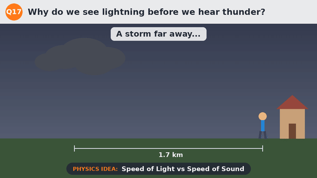
What you see
Lightning strikes 1.7 km away from a person standing by a house. The flash reaches them almost instantly (about 0.000006 s). Meanwhile the sound spreads out as a wave, much more slowly. The timer counts up as it travels, and about 5 seconds later the thunder arrives: BOOM!
Why it happens
The flash and the thunder are made at the same moment, by the same lightning bolt.
Light travels at about 3 × 10⁸ m/s (300,000 km per second). Over 1.7 km, that takes only about 6 millionths of a second.
Sound is a wave of compressions and rarefactions in the air, passed on from molecule to molecule. In air it travels at only about 343 m/s, almost a million times slower than light. Over 1.7 km it takes about 1700 ÷ 343 ≈ 5 seconds.
Big idea: Light is almost a million times faster than sound. Count the seconds after the flash and divide by 3 to get the storm's distance in km.
Try it yourself
Next thunderstorm, count the seconds from each flash to its thunder (safely indoors!).
Divide by 3 to estimate how many km away the lightning was. Is the storm coming closer or moving away?
Watch someone hammering or kicking a ball far away: you see it before you hear it.
Q18
Why does an ambulance siren change pitch as it passes?
Doppler Effect · Sound Waves · HC Verma Ch 16
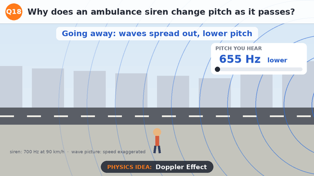
What you see
An ambulance drives along the road past a person. Each blue circle is a sound wave sent out by the siren. Because the ambulance moves forward between waves, the circles are bunched up in front of it and spread out behind it. The meter shows the pitch the person hears: about 755 Hz while it approaches, dropping to about 652 Hz as it goes away, even though the siren itself is always 700 Hz.
Why it happens
The pitch you hear depends on the frequency: how many waves reach your ear each second.
A moving source keeps catching up with the waves it sends forward, so they arrive closer together (shorter wavelength, higher frequency). Behind it, the waves are stretched apart (longer wavelength, lower frequency). This is the Doppler effect.
For a source moving straight towards you, f = f₀ × v/(v − u), and away from you f = f₀ × v/(v + u), where v ≈ 343 m/s is the speed of sound and u is the source's speed. A 700 Hz siren at 25 m/s (90 km/h) gives about 755 Hz and 652 Hz. (The animation exaggerates the speed so you can see the bunching.)
Big idea: A moving source squeezes its waves ahead and stretches them behind.
Try it yourself
Stand safely back from a busy road and listen to cars or bikes going past: hear the 'neeeee-owww'.
Ask a friend to ride past on a bicycle while ringing the bell or playing a steady tone on a phone.
Is the drop in pitch bigger for faster vehicles?
Q19
Why does a steel spoon feel colder than a wooden one in the same room?
Thermal Conduction · Heat Transfer · HC Verma Ch 28
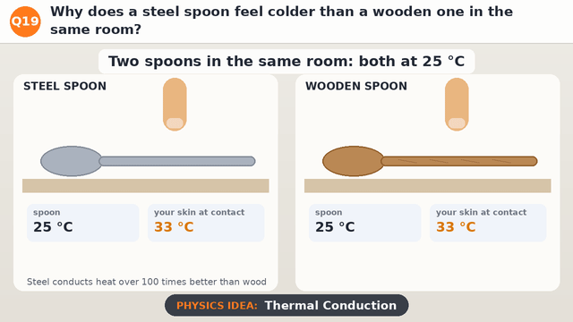
What you see
Both spoons have been in the same room, so both are at 25 °C. A finger touches each one. On the steel spoon, heat flows out of the finger fast and spreads along the spoon; the skin at the contact cools to about 27 °C, and it feels cold. On the wooden spoon, heat barely flows; the skin stays at about 31 °C, and it feels warm.
Why it happens
Your finger (about 33 °C) is warmer than both spoons (25 °C), so heat flows from your finger into whichever spoon you touch.
Steel is a good conductor of heat: it carries heat away from the contact point quickly, over 100 times better than wood. Wood is a poor conductor (an insulator), so heat builds up at the contact and the flow from your finger slows down.
Your skin doesn't measure temperature directly. It senses how fast it is losing heat. Fast heat loss feels cold, so the steel feels colder even though both spoons are at exactly the same temperature.
Big idea: Your skin feels how fast heat leaves it, not the actual temperature.
Try it yourself
Put a steel spoon, a wooden spoon and a plastic spoon on a table for an hour.
Touch each one with the same finger. Rank them from coldest-feeling to warmest-feeling.
Walk barefoot from a tiled floor onto a rug. Both are at room temperature, so why does one feel colder?
Q20
Why do you get a small shock touching a door handle in winter?
Static Electricity · Charging by Friction · HC Verma Ch 29
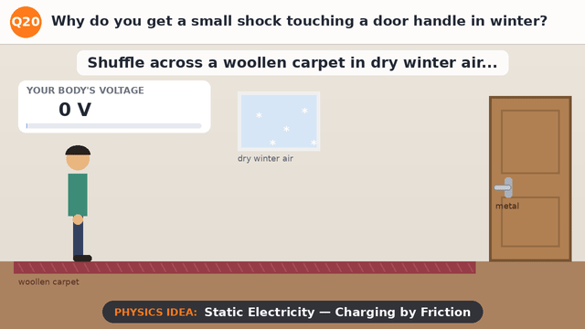
What you see
A person shuffles across a woollen carpet towards a door. With each step, extra electrons (−) collect on their body and positive charges (+) are left behind on the carpet. The meter shows their body's voltage climbing to about 10,000 V. As their hand comes close to the metal handle, the charge jumps across the gap in a tiny spark (ZAP!), and the voltage drops back to zero.
Why it happens
When two different materials rub together, electrons can move from one to the other. This is charging by friction. Here the shoes rubbing on the carpet leave the person with extra electrons (negative charge) and the carpet with a positive charge.
The charge spreads over the body and can reach a voltage of several thousand volts. Metal is a good conductor, so when a finger comes within a few millimetres of the handle, the electric field is strong enough to make the air conduct, and the charge rushes across as a spark.
In humid weather, a thin film of moisture on surfaces lets charge leak away slowly, so it never builds up much. Dry winter air is a good insulator, so the charge stays on you until it finds a conductor. The voltage is high, but the amount of charge is tiny, so it's harmless.
Big idea: Rubbing moves electrons, and the built-up charge escapes as a spark.
Try it yourself
Rub a balloon on dry hair or a woollen sweater, then hold it near small bits of paper. They jump up to it!
In a dark room, pull a woollen sweater off over your head and listen (and look) for tiny crackles.
Touch a door handle with a key or coin first: the spark jumps to the metal key instead of your finger, so you don't feel it.
Q21
Why do mountain roads zigzag instead of going straight up?
Work · Inclined Plane · HC Verma Ch 8
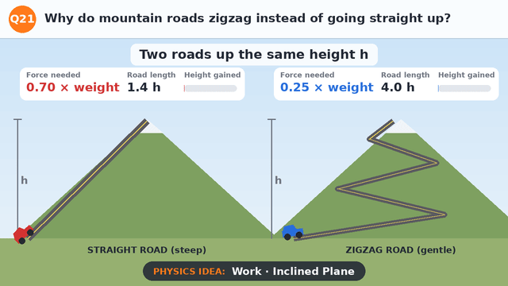
What you see
Two cars climb to the same height h. The red car takes a steep, straight road; the blue car takes a gentle zigzag road. The steep road needs a force of about 0.70 times the car's weight, but it is short (1.4 h). The zigzag needs only about 0.25 times the weight, but its road is about three times longer (4 h). Both cars end up at the top.
Why it happens
To move a car up a slope (ignoring friction), the engine must push it along the road with a force of mg sin θ, where θ is the angle of the slope. The steeper the road, the bigger this force. On a gentle slope, sin θ is small, so the force needed is small.
The work done in lifting the car is force × distance along the road. A steep road means a big force over a short distance; a zigzag means a small force over a long distance. Either way, the work comes out to the same mgh, because both cars gain the same height.
Car engines (and tyres) can only provide a limited force, and too steep a road would make wheels slip. Zigzags trade a longer drive for a much gentler push.
Big idea: A gentle slope needs a smaller force, over a longer distance: the work stays the same.
Try it yourself
Make a ramp from a board and some books. Pull a toy car up it with a rubber band and see how much the band stretches.
Now make the ramp longer and less steep (same height). The band stretches less, but you pull it further.
Notice how stairs, wheelchair ramps and hill-walking paths use the same trick.
Why does a bouncing ball go a little lower each time?
Coefficient of Restitution · Energy · HC Verma Ch 8 & 9
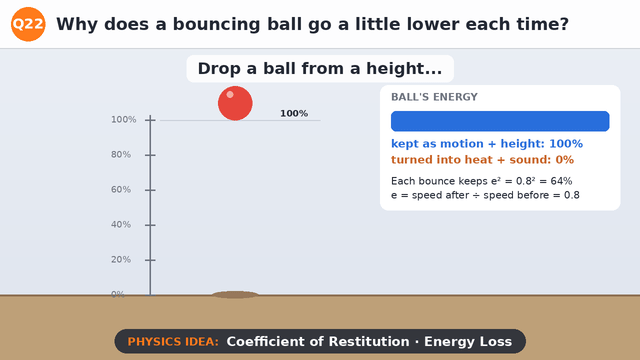
What you see
A ball is dropped and bounces again and again. Each bounce reaches a lower height: 64% of the starting height, then 41%, 26%, 17%, 11%... The energy bar shows the ball's energy being used up: some is lost at every bounce, until the ball comes to rest.
Why it happens
When the ball hits the floor, it squashes for a moment and then springs back. It doesn't spring back perfectly: some of its energy turns into heat inside the ball and floor, and into the sound of the bounce.
The coefficient of restitution e compares speeds: e = speed just after the bounce ÷ speed just before. For this ball e = 0.8. Since height goes as speed squared, each bounce reaches e² = 0.64 of the previous height, so 36% of the energy is lost each time.
A perfectly elastic ball (e = 1) would bounce back to the same height forever. A lump of clay (e = 0) doesn't bounce at all.
Big idea: Every bounce turns some of the ball's energy into heat and sound.
Try it yourself
Drop a tennis ball from 1 m next to a wall with a tape measure. Mark how high the first bounce goes.
Work out e = √(bounce height ÷ drop height). For a 64 cm bounce, e = 0.8.
Try a football, a ping-pong ball and a lump of dough. Which has the highest e?
Why is a door easier to open when you push far from the hinge?
Torque · HC Verma Ch 10
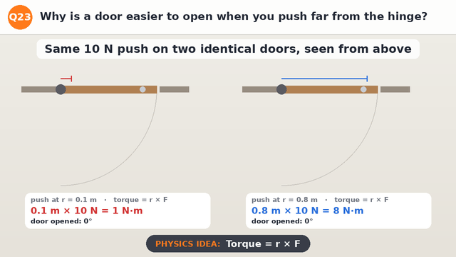
What you see
Two identical doors (seen from above) are each pushed with the same 10 N force. One is pushed 0.1 m from the hinge, the other 0.8 m from the hinge, near the handle. The door pushed near the handle swings open quickly; the one pushed near the hinge barely turns.
Why it happens
What turns a door is not just the force, but the torque: torque = r × F, where r is the distance from the hinge (the turning axis) to where you push. Here, 0.8 m × 10 N = 8 N·m, but 0.1 m × 10 N = only 1 N·m.
The door's angular acceleration is proportional to the torque. With 8 times the torque, the door near the handle turns 8 times faster, so the same push opens it much more easily.
That's why handles are put on the side far from the hinges, and why a long spanner loosens a tight nut more easily than a short one.
Big idea: Turning effect = force × distance from the hinge.
Try it yourself
Push a door open with one finger right next to the handle. Now try with one finger close to the hinges.
Ask a friend to push the door shut near the hinge while you hold it open near the handle. Who wins?
Look for other levers at home: a spanner, a bottle opener, a see-saw.
Why do astronauts float in the space station when gravity is still there?
Gravitation · Orbits · HC Verma Ch 11
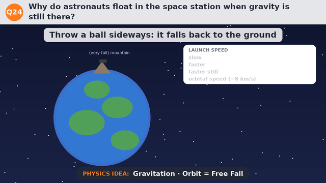
What you see
Balls are launched sideways from a very tall mountain. A slow one falls back to the ground nearby. Faster ones land farther away, because the Earth curves away beneath them. At orbital speed (about 8 km/s), the ball keeps falling but never reaches the ground: it goes all the way round. Inside a space station doing the same thing, the astronaut floats.
Why it happens
At the height of the space station (about 400 km), gravity is still about 90% as strong as on the ground. So astronauts are not floating because there is no gravity.
The station is in free fall: it is falling towards the Earth all the time, but it moves sideways so fast that the Earth's surface curves away below it just as fast as it falls. That's an orbit.
The astronaut is falling in exactly the same way as the station around them. Nothing pushes up on their feet, so they feel weightless, like the feeling at the top of a swing or a lift going down fast.
Big idea: An orbit is free fall that keeps missing the ground, so everything inside floats.
Try it yourself
Throw a ball sideways: slow, then faster. Notice that it always falls, but lands farther away the faster it goes.
Hold a cup of water with a small hole in the bottom. Water streams out. Now drop the cup (outside!). While falling, the water stops coming out.
Work it out: g at 400 km = 9.8 × (6400 ÷ 6800)² ≈ 8.7 m/s².
Why does a sharp knife cut better than a blunt one?
Pressure · HC Verma Ch 13
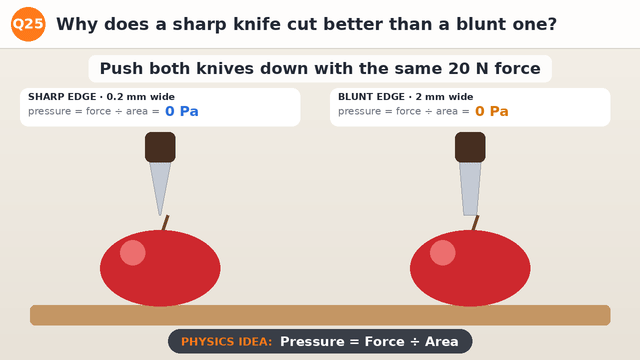
What you see
Two knives push down on two apples with the same 20 N force. The sharp knife's edge is 0.2 mm wide; the blunt knife's edge is 2 mm wide. The sharp knife slices straight through and the apple falls in two halves. The blunt one only squashes a dent into the skin.
Why it happens
Pressure is force divided by the area it acts on: P = F ÷ A. The same force spread over a small area gives a big pressure.
Along a 5 cm blade, the sharp edge touches an area of only 0.00001 m², so the pressure is 20 ÷ 0.00001 = 2,000,000 Pa. The blunt edge touches ten times more area, so the pressure is ten times smaller: 200,000 Pa.
The apple's skin breaks only when the pressure on it is high enough. The sharp knife reaches that pressure easily; the blunt one doesn't.
Big idea: Same force, smaller area: much bigger pressure.
Try it yourself
Press the blunt end of a pencil into a lump of dough, then the sharp end, with the same push. Compare the dents.
Hold a pencil between your palms by its two ends and press gently. Which end hurts more, and why?
Think about why camels have wide feet and why nails have pointed tips.
Q26
How does a straw actually "pull" a drink up?
Atmospheric Pressure · HC Verma Ch 13
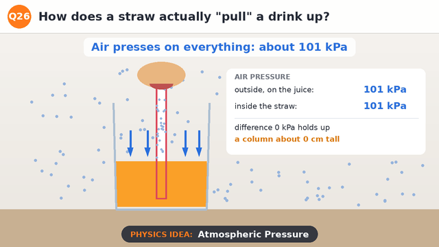
What you see
Air molecules press on everything around us, including the juice in the glass, with about 101 kPa of pressure. When you suck, some air is removed from the straw, and the pressure inside it drops by about 1 kPa. The juice rises up the straw.
Why it happens
The straw doesn't pull anything. Sucking just lowers the air pressure inside the straw, by expanding your mouth and lungs.
The air outside still presses down on the juice in the glass with full atmospheric pressure. Now the push on the open surface is bigger than the push inside the straw, so the juice is pushed up the straw.
It rises until the weight of the column balances the difference: h = ΔP ÷ (ρg) = 1000 ÷ (1000 × 9.8) ≈ 10 cm for a 1 kPa difference.
Big idea: Outside air pushes the drink up; sucking only removes the air above it.
Try it yourself
Drink with a straw, then poke a small hole in the straw near the top. Why does it stop working?
Fill a straw with water, close the top with your finger and lift it out. Why doesn't the water fall out?
Put a straw in a sealed bottle (with clay around the straw). Can you still drink?
Q27
Why don't raindrops falling from 2 km hurt us?
Viscosity · Terminal Velocity · HC Verma Ch 14
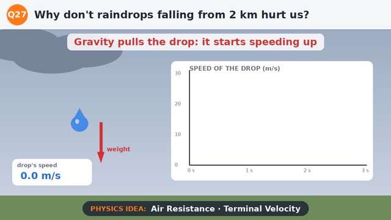
What you see
A raindrop falls from a cloud. At first it speeds up, but the air drag on it grows as it gets faster. Soon drag equals its weight and the speed stops increasing, at about 6.5 m/s (around 23 km/h). Without air, it would keep speeding up and hit the ground at about 200 m/s.
Why it happens
Gravity pulls the drop down with a constant force, its weight. The air pushes back with a drag force that grows as the drop moves faster.
When drag becomes equal to the weight, the net force is zero. By Newton's first law, the drop then falls at a steady speed: its terminal velocity.
For a 2 mm drop, that's only about 6.5 m/s. Without air, falling 2 km would give v = √(2gh) = √(2 × 9.8 × 2000) ≈ 200 m/s, as fast as a racing aeroplane!
Big idea: Air drag grows until it balances the weight, so the drop stops speeding up.
Try it yourself
Drop a sheet of paper and a crumpled sheet together. Which reaches its terminal velocity sooner?
Drop a coffee filter (or a paper cupcake case) from a height and watch it fall at a steady speed.
Think about why skydivers spread their arms and legs, and why parachutes are so big.
Why does a guitar string's note go higher when you tighten it?
Waves on a String · HC Verma Ch 15
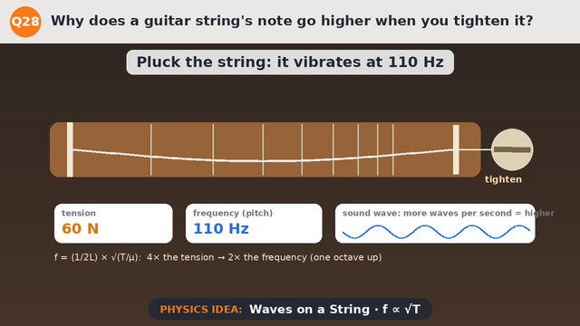
What you see
A guitar string vibrates at 110 Hz with a tension of 60 N. As the tuning peg is turned, the tension rises to 135 N (165 Hz) and then 240 N (220 Hz). The string vibrates faster, the waveform shows more waves per second, and the note gets higher.
Why it happens
A plucked string sends waves running along it. Their speed is v = √(T/μ), where T is the tension and μ is the mass per metre. Tighter string, faster waves.
The string's lowest note has a wavelength of twice the string's length, so its frequency is f = v ÷ 2L = (1/2L) √(T/μ). Faster waves mean more vibrations per second.
Frequency goes as the square root of tension: 4 times the tension (60 N → 240 N) doubles the frequency (110 Hz → 220 Hz), which is one octave up.
Big idea: Tighter string → faster waves → higher frequency → higher note.
Try it yourself
Stretch a rubber band between two fingers and pluck it. Stretch it more and pluck again. What happens to the note?
Pluck a guitar string, then press it halfway along (shorter L) and pluck again.
Compare thick and thin strings: which has the bigger μ, and which plays lower?
Q29
Why do soap bubbles show rainbow colours?
Thin-Film Interference · HC Verma Ch 17
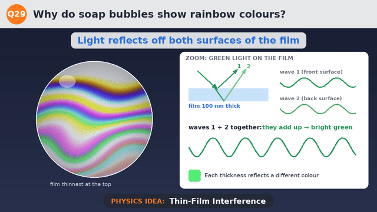
What you see
A soap bubble shimmers with swirling bands of colour that keep moving. The zoom shows green light hitting the soap film: part reflects off the front surface and part off the back. When the film is 100 nm thick the two reflected waves add up (bright green); at 200 nm they cancel (no green).
Why it happens
A soap film is a very thin layer of water, a few hundred nanometres thick. Light reflects from both its front and back surfaces, so two waves come back towards your eye.
The wave from the back surface travels a little extra distance through the film. Depending on the thickness, the two waves arrive in step (they add up: bright) or out of step (they cancel: dark). This is interference.
Each colour has a different wavelength, so each thickness makes some colours bright and others vanish. The film is thinner at the top as the water drains down, and it swirls about, so you see moving bands of colour.
Big idea: Light reflected from the film's two surfaces adds up for some colours and cancels for others.
Try it yourself
Blow a big soap bubble (or dip a wire loop) and hold it still. Watch the colour bands drift downwards as it drains.
Just before it pops, the top often turns black. The film there is too thin to reflect any colour strongly.
Look for the same colours in a thin film of oil on a wet road.
Q30
Why does a spoon show you upside down on one side and upright on the other?
Concave & Convex Mirrors · HC Verma Ch 18
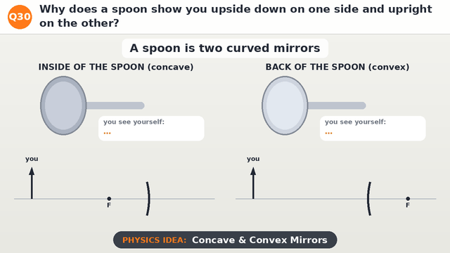
What you see
The inside of a spoon (concave) shows you small and upside down. The back of the spoon (convex) shows you small but upright. Ray diagrams follow two rays from the top of your head to each side.
Why it happens
The inside of a spoon is a concave mirror. Rays from the top of your head reflect and pass through its focus, crossing over each other. When you are farther away than the focus, they meet below the axis, so the image is real, smaller and upside down.
The back of the spoon is a convex mirror. Reflected rays spread out, as if they came from a point behind the mirror. Your eye traces them back to a small, upright (virtual) image behind the spoon.
Bring the inside of the spoon very close to your eye (closer than its focus) and the image flips upright and grows: that's how a make-up mirror works.
Big idea: Concave mirrors make rays cross and flip you; convex mirrors spread them and keep you upright.
Try it yourself
Look into the inside of a shiny spoon at arm's length, then slowly bring it close to your eye. When does your image flip?
Look at the back of the spoon. Does the image ever flip?
Find convex mirrors in real life: shop security mirrors and car side mirrors. Why do they use convex?
Q31
How does a rainbow form after rain?
Dispersion · Refraction · HC Verma Ch 18 & 20
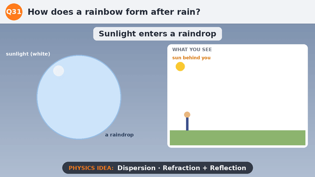
What you see
A beam of white sunlight enters a raindrop. As it enters, it bends and splits into colours. It reflects off the back of the drop and comes out again, with the colours fanned out. With the sun behind you, millions of drops together make a rainbow: red from higher drops (42°) and violet from lower ones (40°).
Why it happens
Light slows down and bends (refracts) when it enters water. Water bends violet light slightly more than red, so white light splits into its colours: this is dispersion.
Inside the drop, the light reflects off the back surface and then bends again as it leaves. For red light, the brightest light comes out about 42° from the direction opposite the sun; for violet, about 40°.
So each drop sends you just one colour, depending on its angle from your eye. All the drops at 42° look red and form the outer edge of a circle; those at 40° look violet and form the inner edge. The ground cuts the circle into an arc.
Big idea: Each raindrop bends, splits and reflects sunlight, sending each colour out at its own angle.
Try it yourself
On a sunny morning or evening, stand with the sun behind you and spray a fine mist from a hose. Look for the rainbow.
Put a glass of water on a sunny windowsill and look for a small spectrum on the floor.
Notice: you can never walk to the end of a rainbow. Why not?
Q32
Why do stars twinkle but planets don't?
Atmospheric Refraction · HC Verma Ch 18
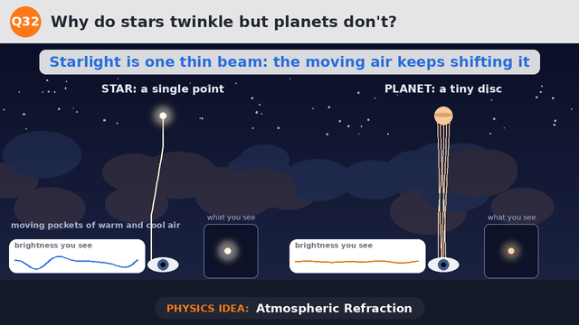
What you see
Light from a star travels down through moving pockets of warm and cool air. The single thin beam wobbles, so the star you see flickers in brightness and jiggles. Light from a planet comes as many beams from across its disc. They wobble separately, and its brightness stays steady.
Why it happens
Warm air and cool air bend light by slightly different amounts. The air above us is always moving, so starlight is bent first one way and then another as it passes through.
Stars are so far away that they look like single points. All of their light comes along one thin path, so each little bend sends more or less of it into your eye: the star twinkles.
Planets are much closer and look like tiny discs. Light from different parts of the disc is bent in different ways at the same moment; some beams get brighter as others get dimmer, so the total stays almost steady.
Big idea: A star is a single point, so moving air makes it flicker; a planet's many points average out.
Try it yourself
On a clear night, compare a bright star low in the sky with one high up. Which twinkles more? (Low stars shine through more air.)
Find a planet (Venus or Jupiter are bright and steady) and compare it with a nearby star.
Look at a distant road on a hot day: the 'shimmer' is the same effect.
Q33
Why are small gaps left between railway rails?
Thermal Expansion · HC Verma Ch 23
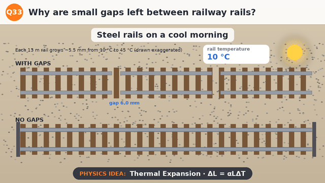
What you see
Two railway tracks warm up in the sun from 10 °C to 45 °C. On the top track, each rail grows a little into the gap next to it, and the gaps shrink. The bottom track has no gaps, so the rails push against each other and buckle sideways.
Why it happens
Most solids expand when heated: their particles vibrate more and push each other slightly farther apart. The change in length is ΔL = α L ΔT.
For steel, α = 0.000012 per °C. A 13 m rail warming by 35 °C grows by 0.000012 × 13 × 35 ≈ 5.5 mm. That's small, but rails are pushed with huge forces if they can't expand.
Gaps give each rail room to grow. Without them, the track can bend out of shape (a 'sun kink'), which is dangerous for trains. Many modern tracks use long welded rails that are stretched and clamped when laid, to control the same problem.
Big idea: Steel grows when it heats up, so rails need room to expand.
Try it yourself
Look for gaps in bridges, footpaths and concrete roads (expansion joints).
Run a tight metal jar lid under hot water. Why does it open more easily?
Look at overhead power cables in summer and winter. When do they sag more?
Q34
How does a clay pot (matka) keep water cool without a fridge?
Evaporation · Latent Heat · HC Verma Ch 24 & 25
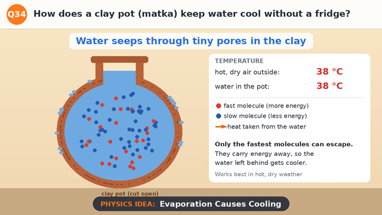
What you see
A clay pot full of water stands in hot, dry air at 38 °C. Water seeps through tiny pores in the clay and wets the outside. There, the fastest molecules escape into the air. Heat flows out of the water to replace their energy, and the water inside cools to about 28 °C.
Why it happens
Unglazed clay is full of tiny pores, so a little water slowly seeps through to the outside surface and evaporates there.
The molecules in water move at many different speeds. Only the fastest ones have enough energy to escape from the surface. When they leave, the average energy of those left behind drops, so the water gets cooler. This energy is called latent heat of vaporisation.
The surface takes heat from the pot and the water inside, cooling them. It works best when the air is hot and dry, so evaporation is fast. In humid weather a matka cools much less.
Big idea: Evaporation carries away the most energetic molecules, so the water left behind cools.
Try it yourself
Put a drop of water on the back of your hand and blow on it. Now try a drop of hand sanitiser. Which feels colder, and why?
Wrap a wet cloth around a bottle of water and leave it in a breeze. Compare it with a dry bottle after an hour.
Think about why sweating keeps you cool, and why humid days feel so sticky.
Q35
Why does a pressure cooker cook food faster?
Boiling Point & Pressure · HC Verma Ch 24
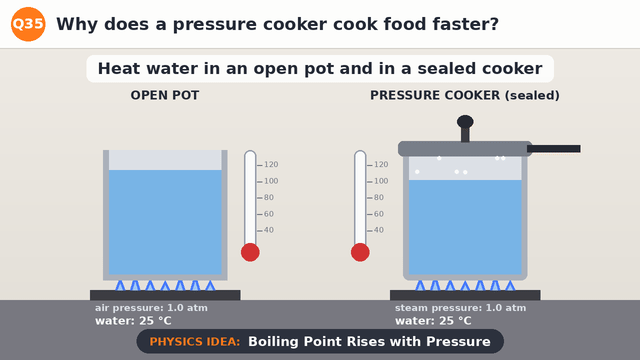
What you see
Water heats up in an open pot and in a sealed pressure cooker. The open pot starts boiling at 100 °C and stays there. In the cooker, steam can't escape, so the pressure rises to about 2 atm. The water keeps getting hotter, up to about 120 °C, before it boils, and the whistle blows.
Why it happens
Water boils when its vapour pressure equals the pressure on its surface. At normal air pressure (1 atm), that happens at 100 °C. Once boiling, extra heat just makes more steam, so the temperature can't rise.
A pressure cooker is sealed. The steam it makes is trapped, so the pressure inside rises. At about 2 atm, water has to reach about 120 °C before it can boil.
Food cooks faster in hotter water, because the reactions that soften it go faster at higher temperature. The whistle is a weight that lifts to let out steam and keep the pressure from rising further.
Big idea: Higher pressure raises the boiling point, so the water gets hotter and food cooks faster.
Try it yourself
Count the whistles your family uses for dal or rice. What would happen in an open pan in the same time?
In the mountains, air pressure is lower. At around 3000 m, water boils at about 90 °C. Why do people there use pressure cookers even more?
Never open a pressure cooker until the pressure has dropped. Why is that important?
Q36
Why does a black shirt feel hotter in the sun than a white one?
Absorption & Reflection of Radiation · HC Verma Ch 28
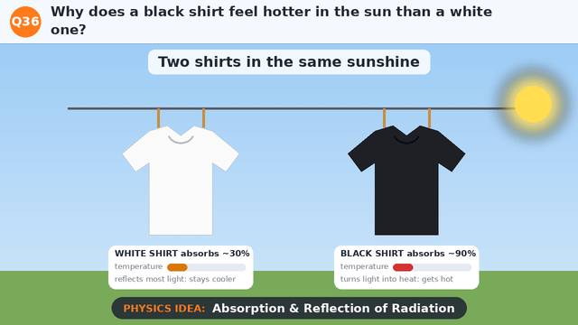
What you see
A white shirt and a black shirt hang side by side in the sunshine. Most of the sunlight hitting the white shirt bounces back off it. Almost all the light hitting the black shirt is soaked up, and it gets much hotter.
Why it happens
Sunlight carries energy as radiation. When it hits a surface, it can be reflected (bounced back) or absorbed (taken in and turned into heat).
White looks white because it reflects all colours of light well, so it absorbs only a small share, roughly a third. Black looks black because it reflects very little: it absorbs around 90% of the light, and all that energy becomes heat.
So in the same sunshine, a black shirt warms up much more. Good absorbers are also good emitters, which is why black things also cool down faster in the shade.
Big idea: Black absorbs most of the sunlight as heat; white reflects most of it away.
Try it yourself
Put two identical glasses of water in the sun, one wrapped in black paper and one in white. Check them with a thermometer after 30 minutes.
Touch a black car and a white car parked in the sun. Which is hotter?
Why are many houses in hot places painted white?
Q37
Why does the breeze at the beach blow from the sea in the day and from land at night?
Specific Heat · Convection · HC Verma Ch 25 & 28
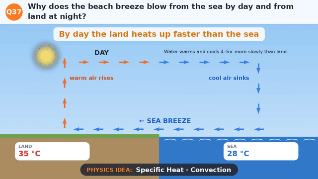
What you see
By day, the land heats up to 35 °C while the sea stays at 28 °C. Warm air rises over the land, and cool air flows in from the sea to replace it: a sea breeze. At night, the land cools to 20 °C while the sea stays at 25 °C. Now warm air rises over the sea, and the breeze blows from land to sea.
Why it happens
Water has a very high specific heat: it needs about 4–5 times more energy than dry soil or sand to warm up by 1 °C. The sun also heats only the top layer of land, while water mixes and spreads the heat deeper. So by day the land warms much faster than the sea.
Air above the hot land warms, expands and rises (convection). Cooler, denser air from over the sea moves in to take its place. That flow along the ground is the sea breeze.
At night the land loses its heat quickly, but the sea stays warm. Now the air over the sea is warmer and rises, and the surface breeze blows out from the land: a land breeze.
Big idea: Land heats and cools faster than water, so the convection loop flips between day and night.
Try it yourself
Put a bowl of sand and a bowl of water in the sun for an hour. Which gets hotter? Then bring both into the shade. Which cools faster?
Hold a strip of tissue paper above a hot cup of tea and watch it move in the rising air.
Why do places near the sea have milder weather than places far inland?
Q38
Why can birds sit on high-voltage wires without getting a shock?
Potential Difference · Current · HC Verma Ch 32
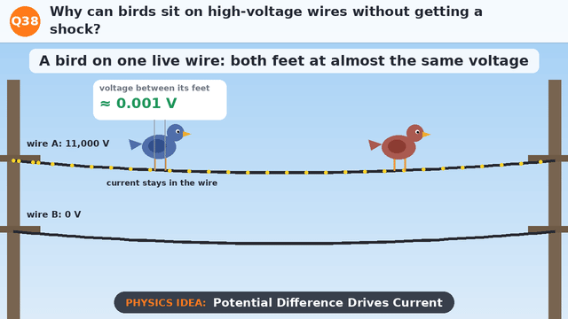
What you see
A bird sits on a live wire carrying 11,000 V. The meter shows only about 0.001 V between its two feet, and the current keeps flowing along the wire past it. A second bird stretches a wing towards another wire at a different voltage: that would mean an 11,000 V difference across its body. Danger!
Why it happens
Electric current flows through something only if there is a potential difference (a voltage difference) across it. It is the difference that pushes charge through.
Both of the bird's feet are on the same wire, a few centimetres apart. The thick metal wire has a tiny resistance, so the voltage difference between the feet is about a thousandth of a volt. Almost no current goes through the bird; it stays in the wire.
If the bird touched two wires at once, or a wire and an earthed pole, there would be thousands of volts across its body, and a large current would flow. That's why you must never touch a fallen wire or fly kites near power lines.
Big idea: Current needs a voltage difference: both feet on one wire means almost none.
Try it yourself
Draw a circuit with a cell, a bulb and a long thick wire. Mark where the voltage is the same and where it is different.
Use a voltmeter on a battery circuit: measure across a short piece of wire, then across the bulb. Compare.
Look at how linesmen work on live lines from insulated platforms: what are they careful never to touch?
Q39
Why does a compass needle always point north?
Earth's Magnetism · HC Verma Ch 36
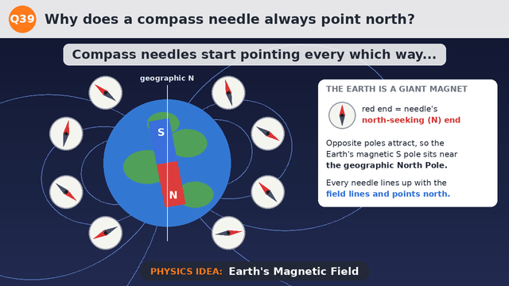
What you see
Compass needles placed all around the Earth start pointing in random directions. The Earth's magnetic field swings each one round, and they settle along the field lines, with their red, north-seeking ends pointing north.
Why it happens
The Earth behaves like a giant bar magnet, tilted about 11° from its spin axis. Its magnetic field lines loop out from near the South Pole and back in near the North Pole.
A compass needle is a small magnet that is free to turn. Opposite poles attract, so the needle's north-seeking pole is pulled towards the Earth's magnetic south pole, which is near the geographic North Pole. (That's why it's confusing: Earth's magnetic 'south' sits in the north!)
The needle settles along the field line where it is. Near the equator the lines run almost horizontally north, so the needle points north.
Big idea: The Earth is a giant magnet, and a compass needle lines up with its field.
Try it yourself
Make a compass: stroke a sewing needle 30 times in one direction with a magnet, push it through a small piece of cork and float it in a bowl of water.
Bring a fridge magnet near a compass. Which end of the needle swings towards it?
Keep the compass away from iron and steel. Why do they upset the reading?
Q40
How does a bicycle dynamo light the lamp?
Electromagnetic Induction · HC Verma Ch 38
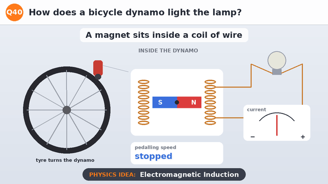
What you see
The bicycle's tyre turns the dynamo. Inside it, a magnet spins between coils of wire. The meter needle swings back and forth and the lamp lights up. As you pedal faster, the needle swings harder and faster, and the lamp glows brighter.
Why it happens
A magnet has a magnetic field around it. As it spins, the field passing through the coil keeps changing: first one way, then the other.
Faraday discovered that a changing magnetic field through a coil makes (induces) a voltage across it. If the coil is part of a circuit, a current flows. This is electromagnetic induction.
The faster the field changes, the bigger the voltage. So pedalling faster spins the magnet faster, giving more current and a brighter lamp. The current keeps reversing direction: it is alternating current (AC).
Big idea: A spinning magnet makes a changing field in the coil, and that induces a current.
Try it yourself
Connect a coil of wire to a sensitive meter (galvanometer) and push a magnet in and out. When does the needle move?
Move the magnet faster. What happens to the needle?
Hold the magnet still inside the coil. Why does the needle stop?
Q41
Why is a dam's wall thicker at the bottom than at the top?
Pressure in Liquids · HC Verma Ch 13
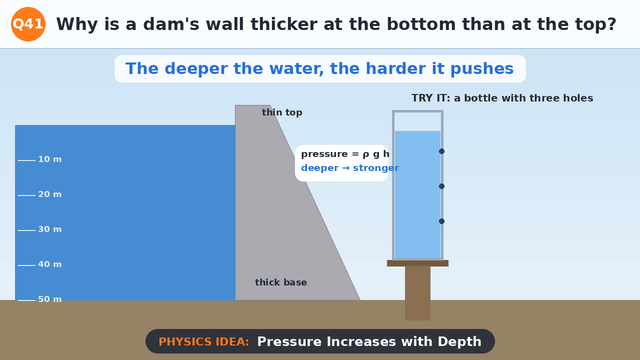
What you see
Water presses on a dam's wall. Arrows show the push growing with depth: about 98 kPa at 10 m deep, rising to 490 kPa at 50 m. The dam is thin at the top and thick at the base. In a bottle with three holes, water squirts out of the lowest hole fastest.
Why it happens
The pressure in a liquid increases with depth: P = ρgh. Each layer of water has to hold up the weight of all the water above it. In water, that adds about 98 kPa (almost 1 atmosphere) for every 10 m.
So the bottom of a dam is pushed far harder than the top: at 50 m deep, five times harder than at 10 m. The wall has to be thickest where the push is biggest.
The same rule shows in the bottle. Water comes out of a hole at a speed of v = √(2gh), where h is the depth below the surface. The deepest hole has the most pressure behind it, so its jet is fastest.
Big idea: Water pressure grows with depth, so the bottom of a dam needs to be strongest.
Try it yourself
Make three holes, one above the other, in a plastic bottle. Fill it with water and watch the jets (do it outside!).
Dive to the bottom of a swimming pool and notice the pressure on your ears.
Why do submarines and deep-sea divers need such strong walls and suits?
Q42
Why can you hear someone around a corner but not see them?
Diffraction · Waves · HC Verma Ch 16 & 17
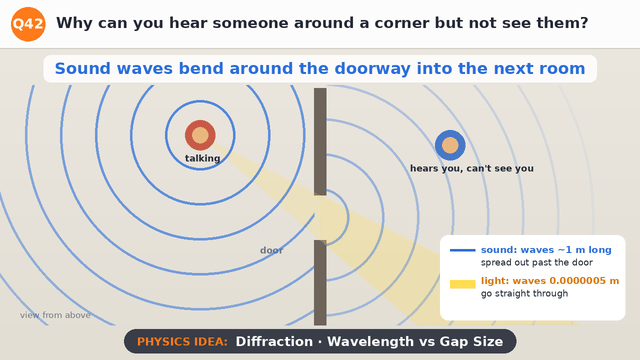
What you see
Seen from above: someone talks in one room. Their sound waves pass through the doorway and spread out in all directions into the next room, reaching a listener around the corner. Light from them goes straight through the doorway in a narrow beam and misses the listener, so they can hear but not see.
Why it happens
Both sound and light are waves. When a wave passes through a gap, it spreads out (diffracts). The spreading is strong when the wavelength is similar to the size of the gap, and tiny when the wavelength is much smaller.
Sounds of speech have wavelengths from about 0.3 m to 3 m, about the width of a door. So sound spreads out widely after passing through a doorway and bends around corners.
Light has a wavelength of about 0.0000005 m, millions of times smaller than a door. It hardly spreads at all, so it travels in straight lines and makes sharp shadows.
Big idea: Waves bend around gaps similar in size to their wavelength: sound does, light hardly does.
Try it yourself
Stand beside an open door (out of sight) and ask a friend to talk in the next room. Can you hear them?
Listen to music from another room: are the deep (bass) or high notes clearer? Bass has longer wavelengths.
Look at the edge of a shadow in sunlight. Is it sharp or blurry?
Q43
Why do you hear "the sea" when you hold a seashell to your ear?
Resonance · Sound · HC Verma Ch 16
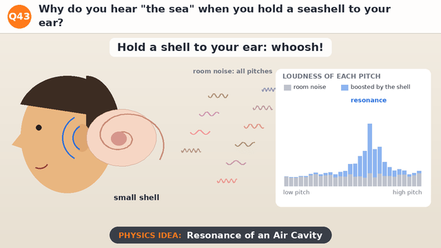
What you see
Someone holds a shell to their ear and hears a whooshing sound. The bar chart shows the room's quiet background noise (grey) at all pitches, and how the shell boosts a band of pitches (blue). With a bigger shell, the boosted band moves to lower pitches, giving a deeper 'sea'.
Why it happens
A room is never perfectly quiet. There is always faint background noise, a mix of sounds at all pitches, from fans, traffic, wind and even the blood flowing in your ear.
The air inside the shell can vibrate naturally at certain frequencies, like the air in a bottle when you blow across it. Sound at those frequencies builds up: this is resonance.
So the shell boosts a band of pitches from the background noise into a soft whoosh that sounds like waves. A bigger cavity resonates at lower frequencies, which is why a cup or cupped hand sounds different.
Big idea: The shell's air resonates and boosts some pitches of the room's background noise.
Try it yourself
Hold a cup, a glass and your cupped hand over your ear in turn. How does the 'sea' change?
Try the shell in a very quiet room and then in a noisy one. When is the sea louder?
Blow across the top of an empty bottle, then add some water and blow again. What happens to the note?
Q44
Why does a glass of iced water "sweat" on the outside?
Condensation · Dew Point · HC Verma Ch 24
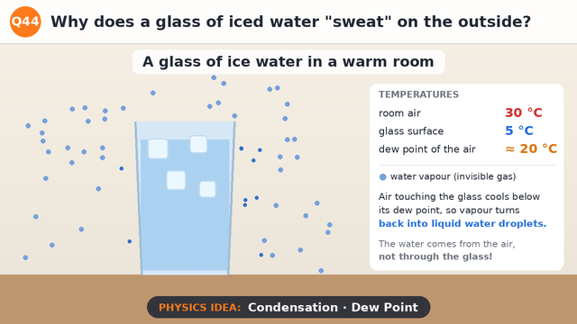
What you see
A glass of ice water stands in a warm room at 30 °C. The air is full of invisible water vapour. The glass's surface is about 5 °C, and the air touching it cools down. Soon water droplets appear all over the outside of the glass and some trickle down.
Why it happens
Air always contains some water vapour, an invisible gas. Warm air can hold more vapour than cold air.
When air cools, there comes a temperature at which it can't hold all its vapour any more. This is the dew point, about 20 °C for fairly humid air at 30 °C. The glass is at 5 °C, so the air touching it cools far below its dew point.
The extra vapour condenses into liquid water droplets on the cold surface. The water comes from the air, not through the glass. Dew on grass on cool mornings forms the same way.
Big idea: Air touching the cold glass cools below its dew point, and its vapour condenses.
Try it yourself
Fill one glass with ice water and one with warm water. Which one sweats?
Add a drop of food colouring to the ice water. Are the droplets outside coloured? (No: they came from the air.)
Breathe on a cold mirror or window. What appears, and why?
Q45
How does a vacuum flask keep tea hot for hours?
Conduction · Convection · Radiation · HC Verma Ch 28
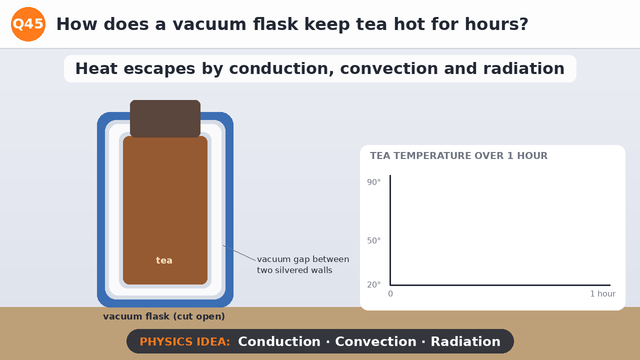
What you see
A vacuum flask is cut open: hot tea sits inside two silvered glass walls with a vacuum between them and a stopper on top. Labels show how each way heat can escape is blocked. Over an hour, tea in an open cup cools from 90 °C to about 44 °C, while tea in the flask only drops to about 85 °C.
Why it happens
Heat escapes in three ways: conduction (passed from particle to particle), convection (carried by moving air or liquid) and radiation (sent out as invisible infrared waves).
Conduction and convection both need particles. The gap between the two walls is a vacuum, with almost no air, so very little heat can cross it that way. The stopper stops warm air rising out of the top.
Radiation can cross a vacuum, but the walls are silvered like mirrors. They reflect most of the infrared back towards the tea. With all three ways blocked, the tea stays hot for hours.
Big idea: A flask blocks conduction, convection and radiation, so heat can hardly escape.
Try it yourself
Fill a flask and a mug with hot water at the same time. Check both every 15 minutes with a thermometer.
Put ice in a flask. Does it keep cold things cold too? Why?
Look at the inside of a flask's stopper and walls. What parts are shiny, and why?